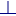

5.5. Drafting properties
Influence the appearance of dimensions. → → |
Influence the appearance of dimensions.
In the Search line at the top of the tree structure, search for text within this structure. Enter the text to be searched for. Suitable results are displayed as the user is typing. Confirm the entry by pressing the ENTER key. The search history will be saved temporarily. Separate text fragments with spaces to display several different contents at the same time. The search is case insensitive.
Clear: Remove the search string again. To do this, right-click the line to display the context menu: Select the command there.

The settings are stored in the documentDimProps.xml file.
Leader line arrow head / Arrow head
Use Type  to select the graphical appearance of the dimension arrow head. Enter the size
to select the graphical appearance of the dimension arrow head. Enter the size  . If you do not want the color to be taken over from the active color attribute, select the Own color
. If you do not want the color to be taken over from the active color attribute, select the Own color  option and specify a color. The Position of the arrow heads for a dimension can be located inside or outside
option and specify a color. The Position of the arrow heads for a dimension can be located inside or outside  . Use the Follow text option to align the arrow to the position specified for the measure text
. Use the Follow text option to align the arrow to the position specified for the measure text  .
.
Reference lines
Use the Visibility option to control whether the dimension reference line is displayed on the left, the right, both sides or not at all. Use Extension to extend the line beyond the dimension arrow head. Gap ensures that there is a space between the line and the edge of the model.

Measure position
Use the Horizontal options to select the position of the measure text on the measure line. The measure text can, for example, be centered or positioned outside on one of the two sides. To determine the position with the cursor, select the Follow cursor option. Use the Vertical option to specify whether the measure text should be located above or in the middle of the measure line. Use the Orientation option to specify whether the measure text is aligned parallel to the measure line or is always displayed horizontally. The Text - line distance value provides a gap between the measure text and measure line.

Hide central line: Do not display the area of the measure line between the reference lines if the arrow heads are pointed at each other .

Leader line tail
Select a text (frame) linkage point .

Plain text
Text: Enter a single line of unformatted text information.
Enter a Size for the text. Select a Font . Curves for milling can be generated using fonts in TGS format. The TGS format does not support special characters, umlauts, or Asian languages. Use the Break command to convert text with a font in the TrueType format TTF to polylines prior to CAM programming. Add to the text design using the font styles Bold and Italic. Use Stretch factor to stretch text and characters lengthwise.
Use the Character spacing factor option to expand the space between the characters by a factor.

Driven text
The text can be adapted to the length of the curve either using a Stretch factor  or Auto stretch
or Auto stretch  . Enter a Text - line distance
. Enter a Text - line distance  as the distance between the text and the reference entity.
as the distance between the text and the reference entity.
Use Alignment to align the text at the beginning (Left), in the middle (Center) or at the end (Right). Use Invert direction  to mirror the text and Invert side
to mirror the text and Invert side  to flip the text.
to flip the text.


Frame
Select a Type . If you do not want the color to be taken over from the active color attribute, select the Own color option and specify a color. Use the Diameter option to specify the space between the text and frame for circular frames. The size of the frame remains constant until the text reaches the frame size. Only then is the size automatically adapted to the content. The Offset option also creates a gap between the text and the frame. However, the frame is always adapted to the size of the content. Use Thickness to change the line thickness of the frame.

Measure text
Enter the Measure size and a size ratio for tolerance specifications in the Tolerance size ratio option. If the Automatic value option is selected, the value of the measure will be sized automatically. A factor can be specified under Measure scale to adapt the value to another scale. A value can be entered under Manual value to specify a fixed value that will be used directly when automatic measuring is deactivated. A Prefix may be placed in front of the value and a Suffix may be placed after the value. Select a Font . Use the Stretch factor option to stretch or shrink the measure text. If you do not want the color to be taken over from the active color attribute, select the Own color option and specify a color. Select a comma or a full stop as the Decimal separator . Use Stretch factor to stretch text and characters lengthwise.
Use the Character spacing factor option to expand the space between the characters by a factor.

Variable representation: Select the manner in which a variable is to be displayed as measure text if a variable is used. There are four options: displaying the variable name, displaying a formula from the parameter list or displaying the calculation result and/or value, also with a frame .

Show symbol: Disable the symbol characterizing a dimension, such as the symbol for the diameter or radius .

Linear unit / Angular dimensions
Select a Unit of measure and use the Show unit option to specify whether the unit of measure is also displayed. In the case of feet and inches units of measure, the values can also be displayed as fractions using the Fractional option. Use the Fractional line option to select the fraction notation. Specify the Precision or Fractional precision of the dimension. Decide whether Leading zeros and Trailing zeros are displayed.


Linear tolerances / Angular tolerances
Use the Representation option to switch on the display of a tolerance. Enter the values for Upper deviation , Lower deviation and the ISO label . Specify the Precision of the tolerance. Decide whether or not Leading zeros and Trailing zeros are displayed.
If a valid ISO label is entered, the upper and lower deviation values will be included automatically in the dimensions.

General
Entity always parallel to view: The entity reference line and arrow head are aligned parallel to the view, even if the view changes.
If the Text always parallel to view option is selected, the text will always be displayed horizontally and parallel to the view, even if the view changes.

Flip readable sight direction: Flip the text sight direction.
Parameters scale: Change the scaling factor for the size of the dimension (measure, arrow head).
Surface finish
Select surface finish attributes.
Symbol:
Basic symbolBase
Machining required
Machining prohibited
Area:
Basic symbol
Face texture: Only the applicable faces should have a surface finish according to further specifications.
All surface around: All faces all around should have the same surface finish.
Surface texture and all faces around: All faces all around should have the same surface finish. Here, the surface finish is determined by further specifications.
Manufacturing method: Enter the final state of a desired manufacturing process, surface treatment or coating, for example, smoothed.
Sampling length: Enter a value or a roughness parameter.
Cutoff: Enter a value for the roughness parameter.
Additional values: Enter further values for the surface finish.
Lay direction: Enter the direction of grooves that are formed during material removing machining:
None: Indefinite grooving
Approximately parallel: Select lay direction parallel to the projection plane (front view).
 Approximately perpendicular: Select lay direction perpendicular to the projection plane (front view).
Angular in both directions: Lay direction crossed, select in two oblique directions.
Multi directional: Select grooves in many directions.
Approximately circular: Select grooves approximately centric to the middle point.
Approximately radial: Select grooves approximately radial to the middle point.
 Particulate, non-directional, or protuberant: Select a non-grooved surface, non-directional or grooving.
Particulate, non-directional, or protuberant: Select a non-grooved surface, non-directional or grooving.
Waviness: Enter a value for the waviness if a surface should be so uneven that deviations from an ideal surface occur periodically at longer intervals than the roughness.
Max. value: Enter further values for the surface finish.
Mean or min. value: Enter further values for the surface finish.
Machining allowance: Enter a value for a machining allowance.